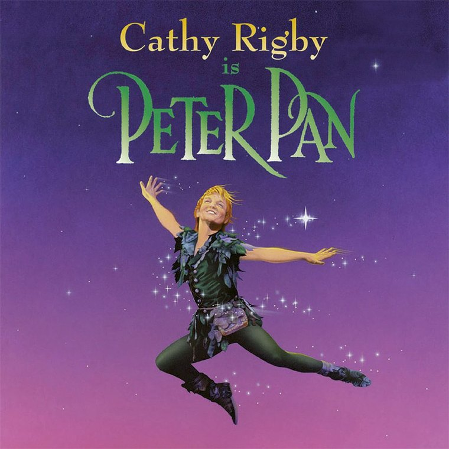
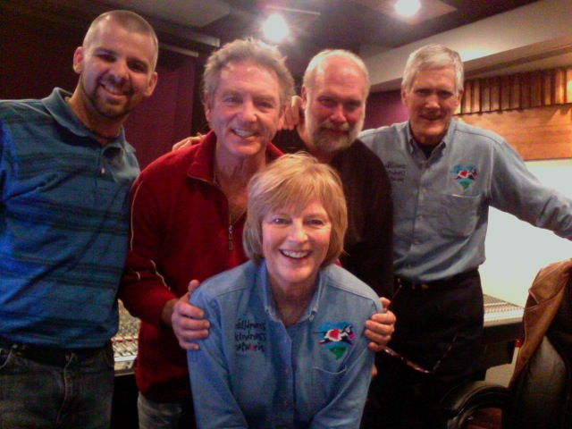

Cathy Rigby is Peter Pan
Recorded, edited and mixed the orchestral score for the Branson staging of the show Cathy Rigby played, on and off, for the better part of thirty years.

The show
Cathy Rigby was an Olympic gymnast before she was an actress, which is why she could fly the way she flew. She played Peter Pan on and off from 1974 into the 2010s and picked up a Tony nomination for it. The production came to the Mansion Theater in Branson, Missouri, in 2009, and I recorded, edited and mixed the orchestral score for it, tracked at the Mansion Studios on site.

What theatre audio asks for
Recording an orchestra for a stage production is a different problem from recording one for a record. A record gets made once and then sits still. A theatre score has to survive being played back into a room full of people, night after night, underneath performers who are moving — and in this show, flying — while a stage manager keeps the whole thing on cue.
It has to sound like an orchestra in that room, at that volume, every night, with nobody in the audience ever thinking about where the sound is coming from. That is the entire job.
Related
The other Branson credit is Presleys’ Country Jubilee.